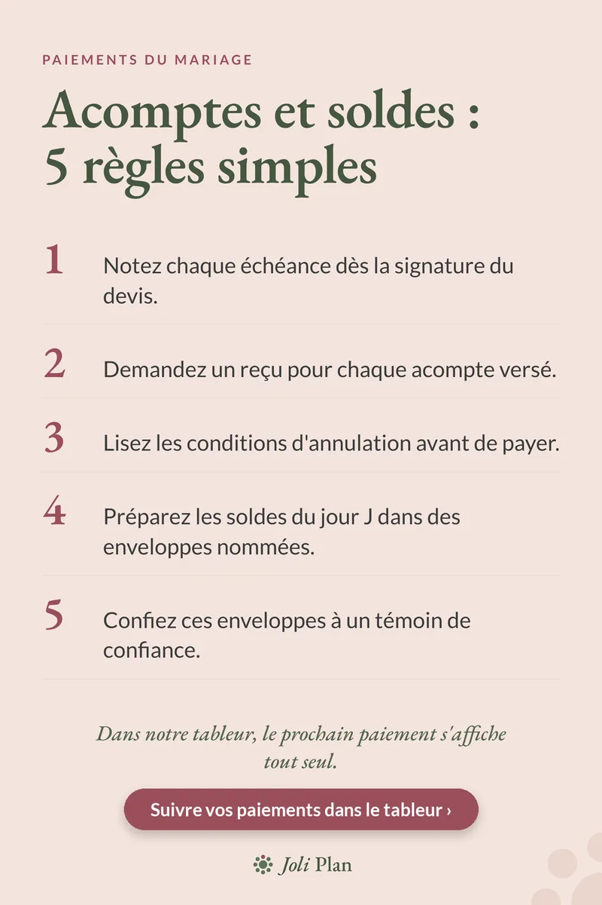

Paiements du mariage
Acomptes et soldes du mariage : 5 règles pour ne rien oublier
Mis à jour le 25/10/2026
Entre le lieu, le traiteur, le photographe et le DJ, un mariage compte vite une dizaine de paiements étalés sur des mois. Cinq règles simples évitent les oublis et les mauvaises surprises.
Voir l'organisateur de mariage sur Etsy ›

Les 5 règles
- Notez chaque échéance dès la signature du devis.
- Demandez un reçu pour chaque acompte versé.
- Lisez les conditions d'annulation avant de payer.
- Préparez les soldes du jour J dans des enveloppes nommées.
- Confiez ces enveloppes à un témoin de confiance.
Le bon réflexe
Un seul endroit pour tous les paiements : prestataire, montant, date prévue, payé ou non. Quand tout est sur la même page, le prochain paiement se voit d'un coup d'œil.
Questions fréquentes
Faut-il demander un reçu pour un acompte ?
Oui, pour chaque acompte versé. Gardez-le avec le devis signé.
Comment payer les prestataires le jour du mariage ?
Préparez les soldes dans des enveloppes au nom de chaque prestataire et confiez-les à un témoin de confiance.